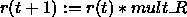
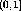
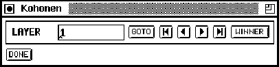

Next: Autoassociative Networks
Up: SOM Implementation in
Previous: Building and Training
When the results of the learning process are to be analyzed, the tools
described here can be used to evaluate the qualitative properties of
the SOM. In order to provide this functionality, a special panel was
added. It can be called from the manager panel by clicking the

button and is displayed in figure  . Yet, the panel can
only be used in combination with the control panel.
. Yet, the panel can
only be used in combination with the control panel.

Figure: The additional KOHONEN (control) panel
- Euclidian distance
The distance between an input vector and the weight vectors can be
visualized using a distance map. This function allows using the SOM as
a classifier for arbitrary input patterns: Choose Act_Euclid as
activation function for the hidden units, then use the
button in the control panel to see the distance maps of consecutive
patterns. As green squares (big filled squares on B/W terminals)
indicate high activations, green squares here mean big distances,
while blue squares represent small distances. Note: The input vector
is not normalized before calculating the distance to the competitive
units. This doesn't affect the qualitative appearance of the distance
maps, but offers the advantage of evaluating SOMs that were generated
by different SOM-algorithms (learning without normalization). If the
dot product as similarity measure is to be used select
Act_Identity as activation function for the hidden units.
- Component maps
To determine the quality of the clustering for each component of the
input vector use this function of the SOM analyzing tool. Due to the
topology-preserving nature of the SOM algorithm, the component maps
can be compared after printing, thereby detecting correlations between
some components: Choose the activation function Act_Component
for the hidden units. Just like displaying a pattern, component maps
can be displayed using the LAYER buttons in the KOHONEN
panel. Again, green squares represent large, positive weights.
- Winning Units
The set of units that came out as winners in the learning process can
also be displayed in SNNS. This shows the distribution of patterns on
the SOM. To proceed, turn on units top in the setup window of
the display and select the winner item to be shown. New winning
units will be displayed without deleting the existing, which enables
tracing the temporal development of clusters while learning is in
progress. The display of the winning units is refreshed by pressing
the 
button again.
Note: Since the winner algorithm is part of the KOHONEN
learning function, the learning parameters must be set as if learning
is to be performed.
Next: Autoassociative Networks
Up: SOM Implementation in
Previous: Building and Training
Niels.Mache@informatik.uni-stuttgart.de
Tue Nov 28 10:30:44 MET 1995